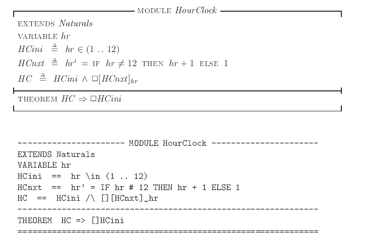
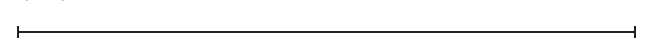
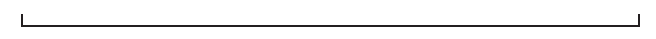
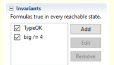

在序章中我们提到了，TLA+的核心抽象就是将系统的执行用一系列离散的状态变化来表示。
在TLA+中，我们称这样的状态序列为一个行为（behavior),我们的目标就是刻画出系统中所有可能的行为。
而一个状态需要用相关变量的值来刻画，因此，一个完整的状态机的刻画需要以下三步：
1.给出系统中需要关心的变量。
2.所有可能的变量初始值。
3.变量在当前状态下的值和在下一状态下的值之间的联系
本篇文章中将用几个基础的例子，说明TLA+的一些基础语法，以及如何用TLA+表现出上述的三个必要结构。
Hour Clock
首先从刻画一个最简单的数字时钟开始，为了尽可能的简单，我们让我们的时钟只显示小时，并且不关心它显示的时间与真实时间的关系。
在这样简单的时钟系统中，我们只需要关心它显示的时间这一个变量即可，用hr表示。
hr应该是一个可以在1到12之间循环变动的变量，比如，它可以有如下的行为：
$$[hr = 11] \rightarrow [hr = 12] \rightarrow [hr = 1] \rightarrow [hr = 2]\rightarrow …$$
我们的目标就是用一个specification刻画出类似这样所有可能的行为。《Specifying system》中给出的一种刻画方式如下。

借助这一个简单的例子，我们逐句介绍以下TLA+的基础语法：
- TLA+代码以MODULE名开头，MODULE类似于程序语言中的.c,.py这样的编程文件。一个specification可以包含多个module，hour clock的specification仅包含一个module。
- 可以通过EXTENDS来引入其他模块，类似于编程语言中的imoprt或者include,EXTENDS M将名为M的模块中定义的declarations, definitions, assumptions, 和theorem全部合并进当前模块。
- HourClock中引入了Naturals模块，Naturals模块中定义了有关自然数的各种操作符，比如+，-等等，TLA+中并没有定义这些基础的运算符，只有引入Naturals模块才可以使用。
- VARIABLE 关键词用来声明所需要的变量。不同于编程语言，TLA+中的变量并没有类型的概念，也没有默认值，此外TLA+中只有一个名字空间，即，所有的变量都被视为系统的全局变量。在后面更复杂的例子中，读者可以尝试感受这样设计的好处。
- HCini语句定义了变量的初始状态：
$$ HCini \triangleq hr \in （1..12)$$
意味着hr初始值可以为1到12之间的任何整数。“..”是Naturals中定义的运算符，“i..j”代表了从i到j的所有整数的集合。 - HCnxt语句定义了状态的迁移:
$$HCnxt \triangleq hr’ = IF hr\ \neq 12\ THEN\ hr+1\ ELSE\ 1$$
primed(hr’) 和unprimed(hr) 变量分别代表了下一状态和当前状态下的变量的值。这样带有prime(‘)的变量的公式被称为action。注意，action是一个公式，而不是一个执行，他规定的是执行中状态变化的规则，而不是系统一定要做的执行。 - $\square$是一个时序运算符，$\square F$意味着公式F永远是对的。
- 最终我们希望用一个单独的公式HC刻画整个系统，可以用合取符号$\wedge$链接多个我们需要的公式。$HC = HCini \wedge \square HCnxt$描述了 系统的behavior要满足：(1)初始的状态满足HCnxt（2）后续的每个step都要满足HCnext。
- Theorem 描述了系统应该自动满足的性质，即，它不是我们在SPEC中定义的规范，但是如果我们满足了SPEC，那Theorem也应该是正确的。在Hour Clock里，我们不难如果满足HC,那hr取值应该是永远在1到12之间循环变动的，即：
$$ THEOREM\ \ HC \Rightarrow \square HCini$$ - Theorem 反应了系统的设计目标，可以用来检验系统的正确性，但TLA+的目标是刻画系统，正确性的证明可以通过数学方法或者TLC 来验证。
- 除了开头的命名行以外，TLA+中还会出现两种横线。

可以出现在代码中的任何位置，只是为了更好划分代码的不同部分，没有实际意义。

出现在代码的最后，用来标志代码的结束。
此外，为了方便程序上的书写，Lamport还提供了一套纯ASCII的版本，就是前文中代码的第二个版本。对一些ASCII中原本没有的符号，该版本给出了一些用ASCII码的代替书写方式，如，$\square$写作[],$\in$写着\in，$\neq$写作#或者=，$\neq$写作==。
A C Program
一段程序代码也可以被轻松地转换为TLA+代码，我们以一段简单的C代码为例。
1 | int i; |
与Hour Clock 不同的一点是，想要刻画该段代码中的状态的变化，除了声明变量i之外，我们还需要一个变量帮我们追踪程序执行到了哪里，所以我们另外声明一个变量pc,熟悉指令流水的读者对这个变量名不会陌生，PC代表了程序计数器，用来存储正在执行的指令的地址。
我们可以将PC分别赋值为”start”,”middle”,”done”用来标识程序运行的位置，最终得到的TLA+代码如下。
1 | ----------------MOUDLE CProgram------------------------ |
在Next的定义中我们使用了析取符号\/，a\/b代表了a和b中至少有一个发生。
在TLA+中，我们可以将析取合取符号写在公式的前面，并让并列的符号在每一行中对齐，这样格式化的书写即方便了阅读，也可以省去使用很多繁杂的括号。
Die Hard
Lamport 为TLA+的使用者提供了一个方便的IDE:The TLA+ Toolbox,使用Toolbox用户可以方便地书写specs并检查语法错误。
此外，Toolbox 提供了一个名为TLC model checker 的工具，可以用宽度搜索的方法暴力遍历specs中所有可能到达的状态序列，以检查系统的正确性。
TLA+ Toolbox 和 TLC 的具体使用方法并不复杂，读者可以自行下载学习和使用。下面我们用一个例子说明，如何使用TLC来解决一个实际的问题。
如果你喜欢电影，你可能已经知道小标题中的Die Hard 其实就是大名鼎鼎的动作电影《虎胆龙威》，在这里，我们用Die Hard 指代在 Die Hard 3中主角团遇到的一个问题：
如何用一个3加仑的水壶，一个5加仑的水壶，以及一个水龙头，得到正好4加仑的水？
我们的思路是用TLA+刻画出两个水壶组成的系统的所有可能的状态变化，再用TLC遍历在该系统中问题是否有解。
首先，考虑初始状态，水壶中初始的水量并没有影响，所以我们不妨让两个水壶都为空：
1 | Init == /\ small = 0 |
然后考虑所有可能的状态变化，我们可以进行的操作无非以下三种：
- 装满一个水壶。
- 倒光一个水壶。
- 将一个水壶的水倒入另一个水壶中。
所以我们的状态转移公式Next应该满足上述操作中任一个为真：
1 | Next == \/ FillSmall |
要写出六个细分的状态转移公式并不困难，但需要注意的是，对于初学者，很可能下意识地写出这样的公式：
1 | FillSmall == small' =3 |
显然这个公式规定了我们要将small的下个状态的值设为3，但注意此时我们改变任何其他变量的值对该公示的正确性并没有影响，也就是说big可以变为任何值，包括$\sqrt 7$甚至”abc”这种毫无意义的值，毕竟TLA+的变量没有任何类型限制。
因此，一个正确的action书写应该包括对其他无关变量的限制：
1 | FillSmall == /\ small' = 3 |
TLA+中的变量是没有类型的，但我们可以通过定义不变量(invariance)对变量的类型做一个断言。不变量不是Spec规定的性质，但可以从spec规定的性质中推导出来，一般会被写进Theorem的后半部分。
类型不变量习惯被命名为TypeOK:
1 | TypeOK = /\small /in 0..3 |
对DieHard问题的一个完整刻画如下：
1 | -------------------------- MODULE DieHard ------------------------------ |
在TLA+ Toolbox中建立这样的spec，我们就可以通过TLC来检测我们的问题有没有解。具体的做法是添加一个big = 4 的不变式：

最终TLC会返回一个error,并且告诉你一个与该不变式矛盾的状态变化，这个变化序列就是问题的解。
小结
本篇借助三个简单的例子阐述了TLA+基本结构和基础语法，顺便简单提及了一下TLA+ 的IDE TLA+ Toolbox 以及非常有用的工具TLC checker,对TLA+有学习兴趣的话，建议一定要下载这个IDE亲身体验。
在本篇及后面的文章中，可能有很多对TLA+语法讲解不清或者遗漏的地方，如有疑惑建议查阅A Summary of TLA+。